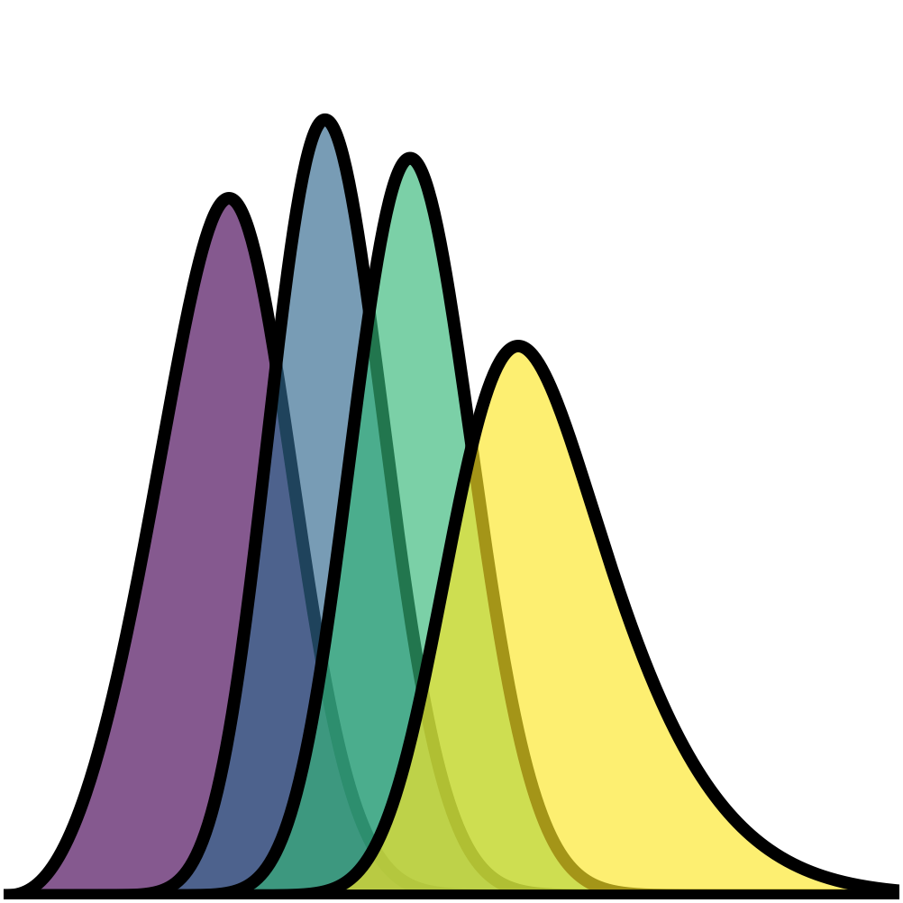
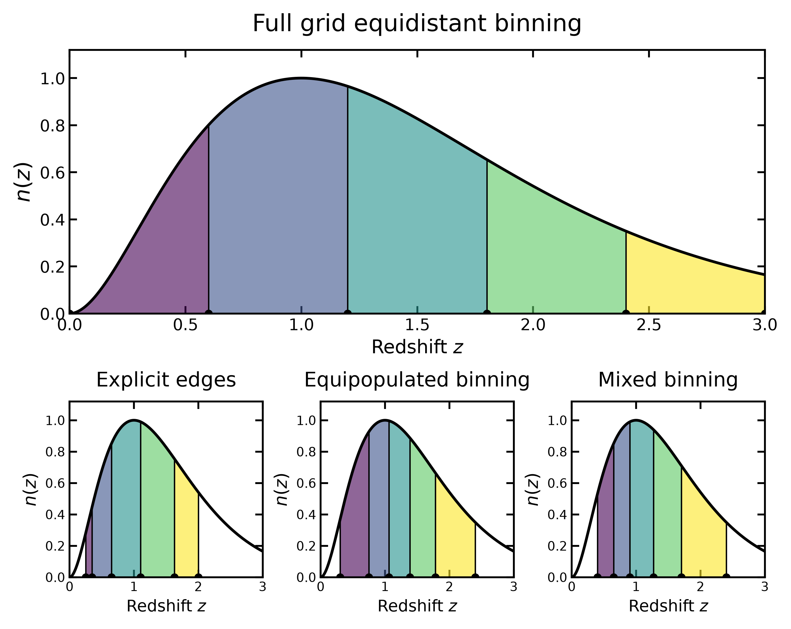
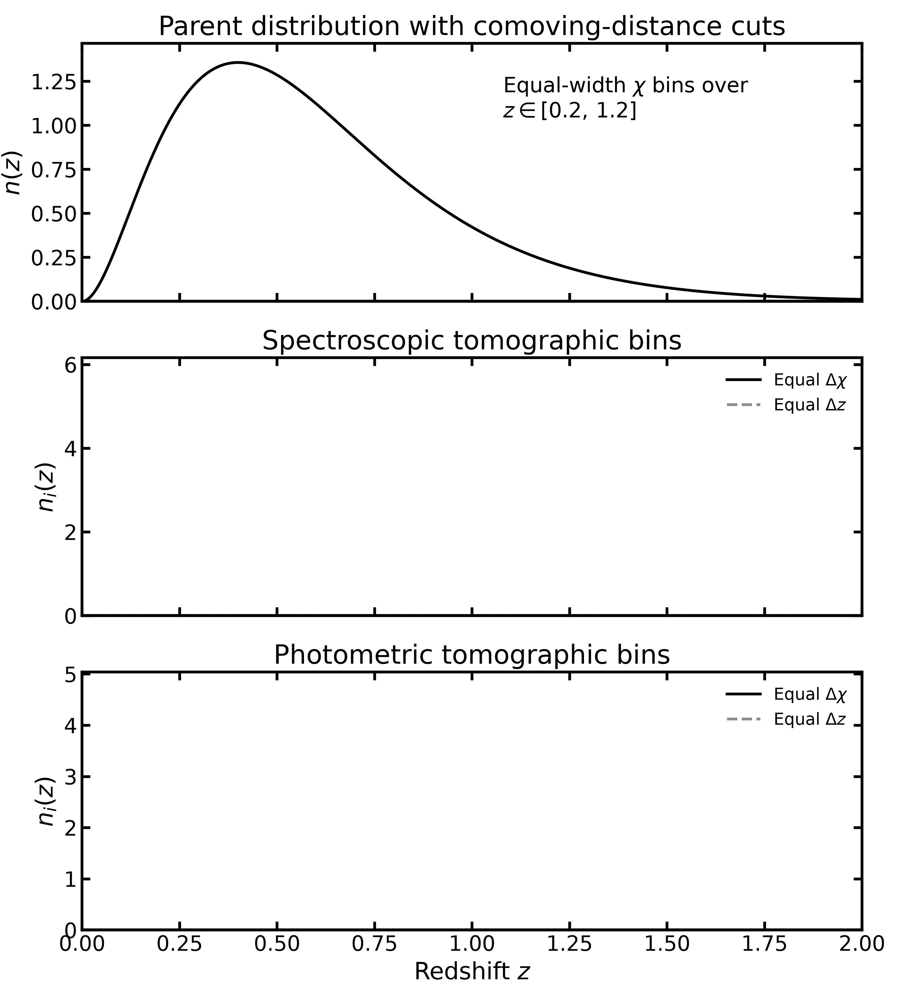
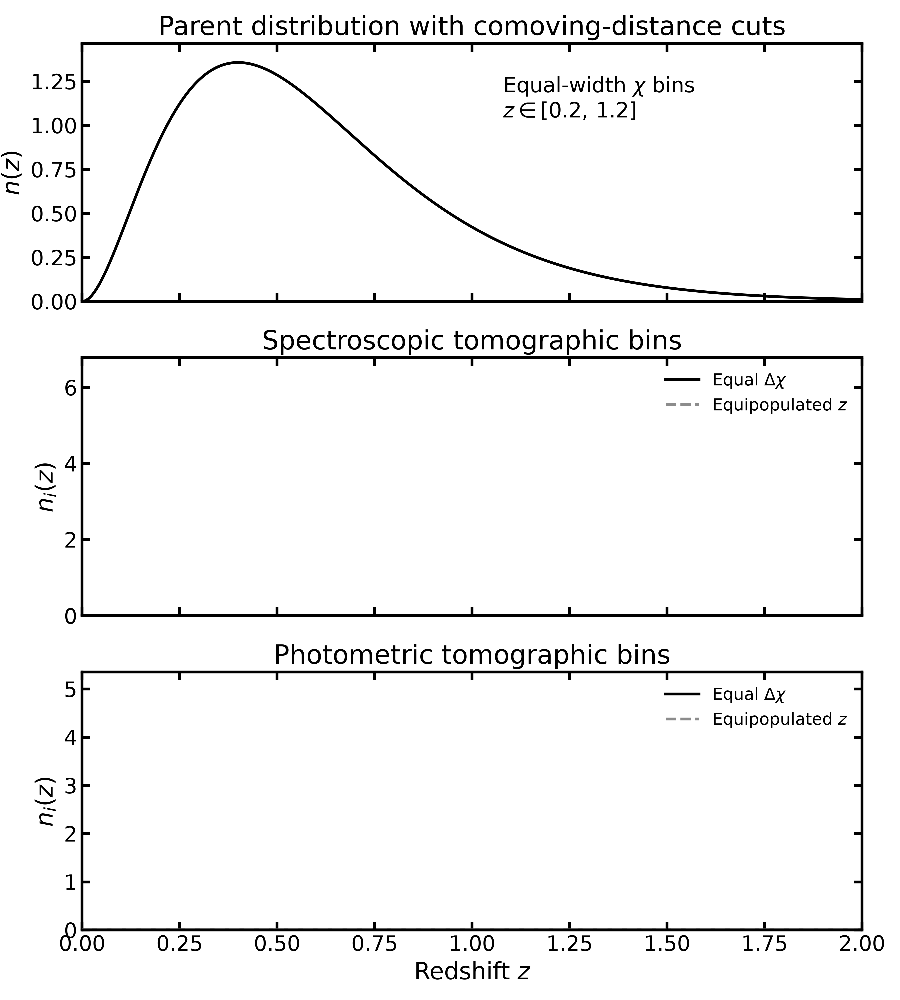

Binning schemes#

Binny supports several prescriptions for constructing tomographic bin edges. The binning prescription is independent of the parent redshift distribution and the redshift uncertainty model.
A binning scheme determines where the bin boundaries are placed.
The tomography kind (for example, photoz or specz) determines
how objects are assigned to those bins.
These are independent choices: the same binning scheme can be used with different tomography kinds.
For practical configurations and executable examples, see Binning schemes.
Redshift grid and binning interval#
Note
The redshift grid and the binning interval are different things.
The input redshift grid (z, or axis in the edge resolver)
specifies the redshift values at which the parent distribution
is evaluated.
By default, Binny constructs bin edges over the full range of
the supplied grid. To restrict binning to a smaller interval,
specify range inside the bins dictionary.
Alternatively, use edges to provide the exact bin boundaries
without selecting a generating scheme.
Restricting the binning interval does not redefine the input redshift grid or the parent distribution.
For example, a parent distribution defined over \(0 \leq z \leq 3\) may be divided into five bins covering the entire grid or a restricted interval, such as \(0.3 \leq z \leq 2.4\).
The parent distribution remains defined over its original grid, while the binning prescription determines the interval and placement of the bin boundaries.
The figure below illustrates four ways of constructing five tomographic bins from the same parent redshift distribution.
The upper panel shows equidistant binning over the full input grid. The lower panels show explicitly specified boundaries, equipopulated binning over a restricted interval, and mixed binning combining equidistant and equipopulated segments.
In all cases, the parent distribution remains unchanged; only the bin boundaries and the interval covered by the bins differ.


Binning modes#
Binny supports three mutually exclusive ways of specifying bin edges:
Explicit edges: the boundaries are supplied directly.
Generated edges: a named scheme generates a requested number of bins.
Mixed binning: multiple schemes are combined over adjacent redshift intervals.
All three modes use the same bins specification.
For generated binning, the number of bins is specified by
n_bins, while the optional range defines the interval
[z_min, z_max] over which the boundaries are constructed.
If range is omitted, the full input redshift grid is used.
For explicit binning, edges directly specifies all
boundaries, including the lower and upper limits.
Neither n_bins nor range should be supplied alongside
edges.
These options are mutually exclusive rather than overriding one another.
The central resolver is
binny.binning.edges.resolve_bin_edges().
Explicit bin edges#
Explicit binning uses a supplied sequence of bin boundaries rather than generating them from a mathematical prescription.
For \(N\) bins, the specification must contain \(N+1\) strictly increasing edges,
This mode does not accept a generating scheme, a separate number of bins, or an additional binning range.
See Explicit bin edges for a practical example.
Generated bin edges#
Generated binning uses a named mathematical prescription to divide a specified interval into \(N\) bins.
The binning interval is
If no interval is explicitly requested, the full range of the input redshift grid is used.
A generated specification contains:
scheme: the name of the binning prescription.n_bins: the requested number of bins.range: an optional interval for constructing the edges.params: optional parameters specific to the selected scheme.
Scheme-specific parameters belong inside params, rather than
at the top level of the bin specification.
Unsupported scheme parameters raise a ValueError.
See Generated bin edges.
Built-in binning schemes#
The following schemes are registered by default.
Scheme |
Aliases |
Description |
|---|---|---|
|
|
Equal-width redshift intervals. |
|
|
Equal integrated population per bin. |
|
None |
Equal integrated generalized weight per bin. |
Equidistant binning#
Equidistant binning divides the requested redshift interval into equal-width bins.
For an interval from \(z_{\min}\) to \(z_{\max}\), the boundaries are
Every bin has the same redshift width,
The boundaries depend only on the requested interval and the number of bins. They do not depend on the parent redshift distribution.
Equal-number binning#
Equal-number binning selects boundaries such that each bin contains the same integrated population.
For a parent distribution \(n(z)\), the boundaries satisfy
Unlike equidistant binning, the resulting bin widths generally vary with redshift.
Regions with higher population density receive narrower bins, while regions with lower population density receive wider bins.
The alias equipopulated is equivalent to equal_number.
The resolver can also use a separate distribution for determining
equal-number boundaries through equal_number_axis and
equal_number_weights.
See Equal-number binning.
Generalized binning#
Generalized binning constructs boundaries by integrating a weight function that depends on the parent redshift distribution and, optionally, the comoving radial distance.
The generalized weight is
where \(\chi(z)\) is the comoving radial distance and \(\alpha\) and \(\beta\) are configurable exponents.
The boundaries satisfy
This prescription contains several familiar binning strategies as special cases.
\(\alpha\) |
\(\beta\) |
Interpretation |
|---|---|---|
0 |
0 |
Equidistant redshift binning. |
1 |
0 |
Equal-number binning. |
0 |
1 |
Equal comoving-distance binning. |
Intermediate exponent values allow bin boundaries to interpolate between these prescriptions.
When \(\beta=0\), comoving-distance information is unnecessary.
For nonzero \(\beta\), the underlying
binny.axes.bin_edges.generalized_tomographic_edges()
function requires comoving-distance samples evaluated on the
same redshift grid.
The comoving-distance array must be strictly increasing and compatible with the input coordinate grid.
When a restricted binning interval is specified, the resolver interpolates the comoving-distance samples onto the restricted grid.
See Generalized binning.
Comoving-distance binning#
Tomographic bins can be constructed using comoving radial distance rather than redshift.
This approach is discussed by Moskowitz et al. (2023), Improved Tomographic Binning of 3x2pt Lens Samples, who compare equal-width redshift bins, equal-width comoving-distance bins, and equipopulated bins.
They find that equal-width comoving-distance bins provide the highest dark energy figure of merit among their initial binning prescriptions, although further optimization of the bin boundaries can improve the constraints.
For a cosmological model with comoving radial distance \(\chi(z)\), equal-width comoving-distance boundaries are defined by
The corresponding redshift boundaries are obtained by inverting the distance-redshift relation,
Because \(\chi(z)\) is nonlinear, equal-width comoving-distance bins generally have unequal redshift widths.
In Binny, this prescription is implemented by
binny.axes.bin_edges.equidistant_chi_edges().
It is also a special case of generalized binning, corresponding to \(\alpha=0\) and \(\beta=1\).
Equal-width redshift versus comoving-distance bins#
The following animation compares equal-width comoving-distance bins (solid curves and colored regions) with equal-width redshift bins (gray dashed curves).
Both prescriptions cover the same redshift interval, but their internal boundaries differ because the comoving-distance relation is nonlinear.


Comoving-distance versus equipopulated bins#
Equal-number binning instead chooses boundaries such that each bin contains the same integrated galaxy population,
Unlike equal-width comoving-distance binning, this prescription depends on the parent redshift distribution.
The following animation compares equal-width comoving-distance bins (solid curves and colored regions) with equipopulated redshift bins (gray dashed curves).


For the illustrated example, four equipopulated bins are constructed over \(0.2 \leq z \leq 1.2\). Each contains approximately 25 percent of the population within that interval.
Equal-number binning is invariant under a monotonic coordinate transformation when the number density is transformed consistently,
Consequently, equipopulated binning in comoving distance and equipopulated binning in redshift yield the same physical boundaries.
Equal-width binning, however, is coordinate-dependent.
In Binny, the two prescriptions are available through
binny.axes.bin_edges.equidistant_chi_edges()
and binny.axes.bin_edges.equal_number_edges().
Mixed binning#
Mixed binning combines different binning prescriptions across adjacent redshift intervals.
Each segment specifies:
A binning scheme.
The number of bins in that segment.
The lower and upper boundaries of the segment.
The total number of bins is the sum of the individual segment counts,
The resulting edges form one strictly increasing array.
Shared boundaries between adjacent segments are included only once.
Mixed binning uses the underlying
binny.axes.mixed_edges.mixed_edges() machinery.
For equal-number segments, the parent distribution is used as the
population proxy unless a separate selection distribution is
provided through selection_axis and selection_density.
In photometric-redshift tomography, these may represent the observed-redshift grid and its corresponding distribution.
See Mixed binning.
Custom binning schemes#
Binny supports user-defined binning prescriptions through a public registry.
A custom scheme receives:
The sampled coordinate axis.
The corresponding density.
The requested number of bins.
Optional scheme-specific parameters.
It must return exactly \(N+1\) strictly increasing bin edges for \(N\) requested bins.
Custom schemes use the same bins specification as built-in
schemes.
Scheme-specific arguments are supplied inside params and
validated against the registered function’s signature.
Scheme names and aliases are case-insensitive. Duplicate registered names are rejected.
The registry exposes:
See Custom binning schemes for registration and usage.